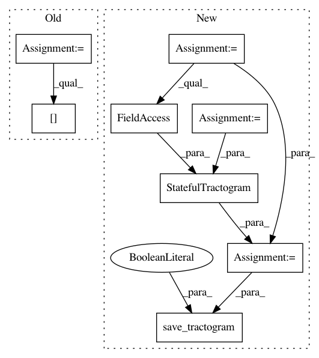

23a07e8601cbdba5ece453864bc6d11e3431543e,dipy/workflows/tests/test_align.py,,test_slr_flow,#,42
Before Change
data_path = get_fnames("fornix")
streams, hdr = nib.trackvis.read(data_path)
fornix = [s[0] for s in streams]
f = Streamlines(fornix)
f1 = f.copy()
After Change
with TemporaryDirectory() as out_dir:
data_path = get_fnames("fornix")
data_path = get_fnames("fornix")
fornix = load_tractogram(data_path, "same",
bbox_valid_check=False).get_streamlines()
f = Streamlines(fornix)
f1 = f.copy()
f1_path = pjoin(out_dir, "f1.trk")
sft = StatefulTractogram(f1, data_path, Space.RASMM)
save_tractogram(sft, f1_path, bbox_valid_check=False)
f2 = f1.copy()
f2._data += np.array([50, 0, 0])
In pattern: SUPERPATTERN
Frequency: 3
Non-data size: 8
Instances
Project Name: nipy/dipy
Commit Name: 23a07e8601cbdba5ece453864bc6d11e3431543e
Time: 2019-07-23
Author: francois.m.rheault@usherbrooke
File Name: dipy/workflows/tests/test_align.py
Class Name:
Method Name: test_slr_flow
Project Name: nipy/dipy
Commit Name: 156f9955319ed9383615a7f84e077f10da3bc11a
Time: 2019-07-26
Author: francois.m.rheault@usherbrooke.ca
File Name: dipy/workflows/tracking.py
Class Name: LocalFiberTrackingPAMFlow
Method Name: _core_run
Project Name: nipy/dipy
Commit Name: 156f9955319ed9383615a7f84e077f10da3bc11a
Time: 2019-07-26
Author: francois.m.rheault@usherbrooke.ca
File Name: dipy/workflows/tracking.py
Class Name: PFTrackingPAMFlow
Method Name: run